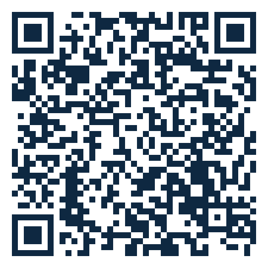

Nuna-Edu-Toolkit
Turn everyday ambient sound into research-ready audio datasets.
A self-hostable, source-available platform for collecting & annotating first-person audio from a wearable device.
Self-hostable
Pluggable ASR
Event-driven labels
Privacy-first
How it works
Capture
wearable streams to your server
→
Slice
1-minute segments
→
ASR recall
speech-to-text preview
→
Annotate
block + point labels
→
Dataset
first-person audio

Scan to try the live demo
kevin-pal.github.io/nuna-edu-toolkit-release
Live demo · Android app · full source — one link. Free for non-commercial & research use.